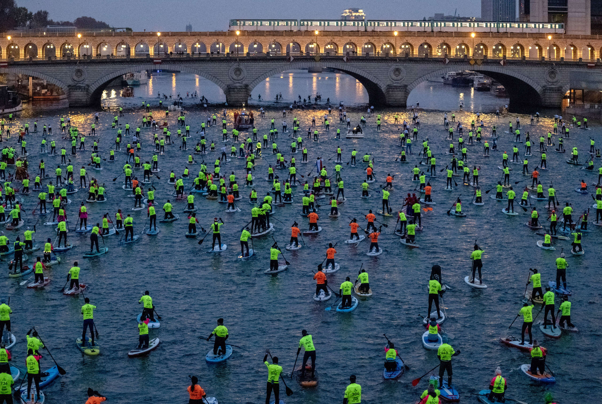

La pollution de la Seine peut être résolue, mais cela nécessite des efforts communs et des actions concrètes. Voici les solutions à mettre en place :
Installer des systèmes de filtration et de captage des eaux de pluie pour limiter les écoulements routiers et industriels.
Rénover les systèmes d'égouts pour éviter les débordements d'eaux usées, surtout lors de fortes pluies.
Encourager les énergies renouvelables pour les bateaux afin de réduire les émissions de CO₂ et autres polluants.
Organiser des campagnes pour encourager les Parisiens à ne pas jeter de déchets dans le fleuve.
Organiser des journées de nettoyage avec citoyens, écoles et associations environnementales.

Chacun de nous peut jouer un rôle dans la préservation de la Seine. Agissons ensemble pour un avenir plus propre et durable.
10 questions sur la Seine, la pollution et l'écologie. Tu as 15 secondes par question. Bonne chance !
Chargement...